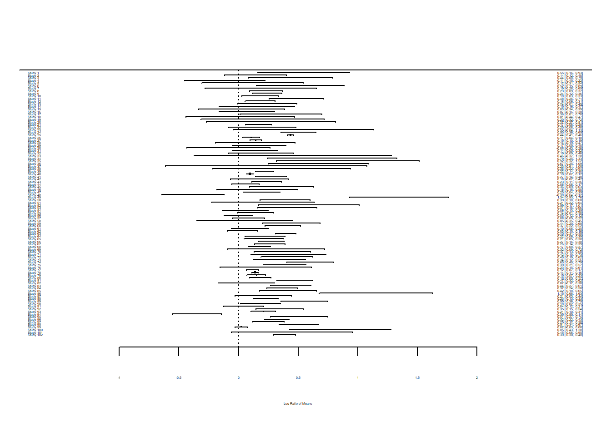
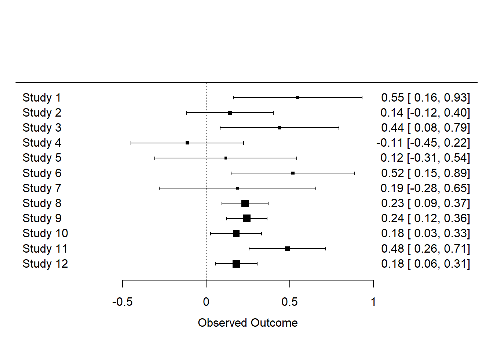
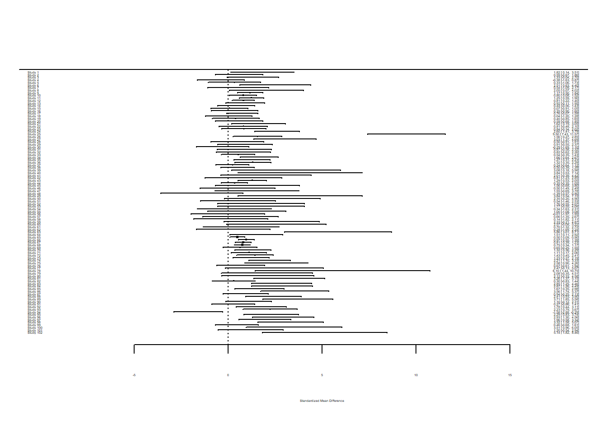
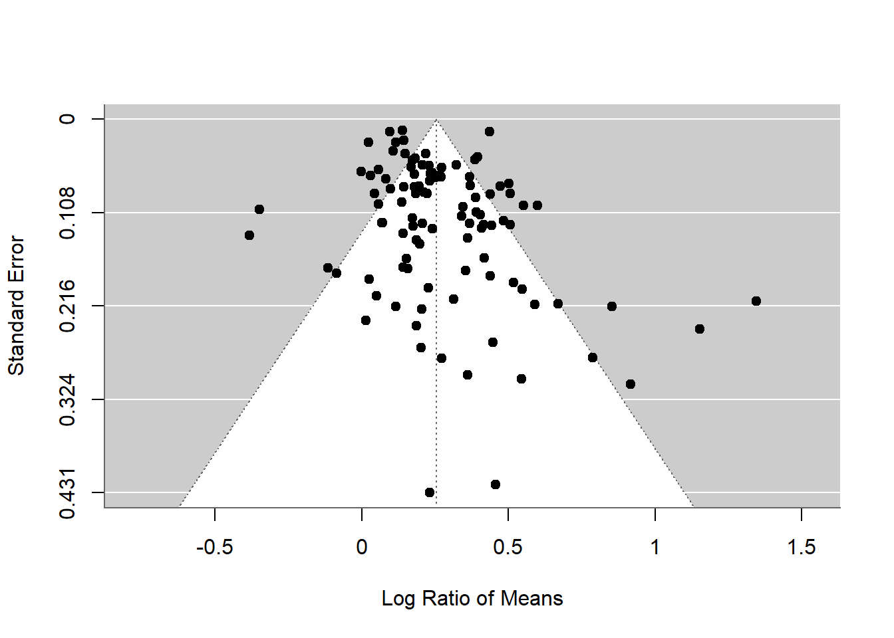
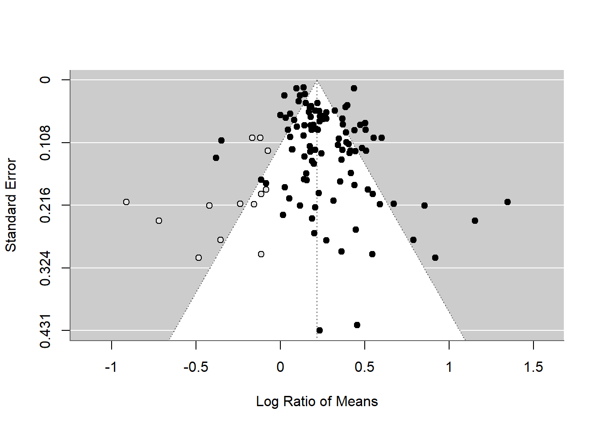

library(metafor)Meta-analyses

There are many steps involve in a meta-analysis. For guidance on how to do a meta-analysis see (Nakagawa et al. 2017) which considers the process of meta-analysis using 10 questions.
This lesson only considers how to do the statistics part of the meta-analysis & publication bias.
Calculating effect sizes
Metafor for meta-analysis
First, install and load the metafor package.
Have a look at the data set named dat.curtis1998 included in the package.
dat <- dat.curtis1998
str(dat)'data.frame': 102 obs. of 20 variables:
$ id : int 21 22 27 32 35 38 44 63 86 87 ...
$ paper : int 44 44 121 121 121 121 159 183 209 209 ...
$ genus : chr "ALNUS" "ALNUS" "ACER" "QUERCUS" ...
$ species : chr "RUBRA" "RUBRA" "RUBRUM" "PRINUS" ...
$ fungrp : chr "N2FIX" "N2FIX" "ANGIO" "ANGIO" ...
$ co2.ambi: num 350 350 350 350 350 350 350 395 350 350 ...
$ co2.elev: num 650 650 700 700 700 700 700 795 700 700 ...
$ units : chr "ul/l" "ul/l" "ppm" "ppm" ...
$ time : int 47 47 59 70 64 50 730 365 365 365 ...
$ pot : chr "0.5" "0.5" "2.6" "2.6" ...
$ method : chr "GC" "GC" "GH" "GH" ...
$ stock : chr "SEED" "SEED" "SEED" "SEED" ...
$ xtrt : chr "FERT" "FERT" "NONE" "NONE" ...
$ level : chr "HIGH" "CONTROL" "." "." ...
$ m1i : num 6.82 2.6 2.99 5.91 4.61 ...
$ sd1i : num 1.77 0.667 0.856 1.742 1.407 ...
$ n1i : int 3 5 5 5 4 5 3 3 20 16 ...
$ m2i : num 3.94 2.25 1.93 6.62 4.1 ...
$ sd2i : num 1.116 0.328 0.552 1.631 1.257 ...
$ n2i : int 5 5 5 5 4 3 3 3 20 16 ...This data set is from the paper by Curtis and Wang (1998). They looked at the effect of increased CO\(_2\) on plant traits (mainly changes in biomass). There is experimental details (sometimes called moderators) including species and functional group. There is also means (m), standard deviations (sd) and sample sizes (n) for the control group (1) and experimental group (2) in the last few columns.

Calculating ‘standardized’ effect sizes
To compare the effect of increased CO\(_2\) across multiple studies, we first need to calculate an effect size for each study - a metric that quantifies the difference between our control and experimental groups.
There are several ‘standardized’ effect sizes. When we have two groups to compare, we have a choice of two effect size statistics we could use.
- The first choice is called ‘response ratio’, which is usually presented in its natural logarithm form (lnRR).
Formula for lnRR
\[\begin{equation} \mathrm{lnRR}=\ln\left({\frac{\bar{x}_{E}}{\bar{x}_{C}}}\right) \end{equation}\]
The sampling error variance for lnRR is also needed.
Formula for calculating sample error variance for lnRR
\[\begin{equation} se^2_\mathrm{lnRR}=\frac{sd^2_{C}}{n_{C}\bar{x}^2_{C}}+\frac{sd^2_{E}}{n_{E}\bar{x}^2_{E}} \end{equation}\]
- The second option of standardised effect size is standardized mean difference (SMD also known as Cohen’s \(d\) or Hedge’s \(d\) or \(g\); there are some subtle differences between d and g, but we do not worry about them for now.)
Formula for calculating SMD
In the formula below:
* \(\bar{x}_{C}\) and \(\bar{x}_{E}\) are the means of the control and experimental group, respectively
* \(sd\) is sample standard deviation
* \(n\) is sample size
\[\begin{equation} \mathrm{SMD}=\frac{\bar{x}_{E}-\bar{x}_{C}}{\sqrt{\frac{(n_{C}-1)sd^2_{C}+(n_{E}-1)sd^2_{E}}{n_{C}+n_{E}-2}}} \end{equation}\]
We also need to calculate the SMD’s sample error variance for each study.
Formula for calculating sample error variance
\[\begin{equation} se^2_{\mathrm{SMD}}= \frac{n_{C}+n_{E}}{n_{C}n_{E}}+\frac{\mathrm{SMD}^2}{2(n_{C}+n_{E})} \end{equation}\]
The square root of this is referred to as ‘standard error’. The inverse of this (the inverse of a number is when you divide 1 by it e.g.\(1/se^2\)) is used as ‘weight’ (studies with bigger sample sizes will have bigger ‘weight’ in the analysis)
We can get R to calculate standardised effect sizes for each study (ie every row) using the function escalc() in metafor.
To obtain the response ratio (lnRR), we use:
lnRR <- escalc(
measure = "ROM", n1i = dat$n1i, n2i = dat$n2i,
m1i = dat$m1i, m2i = dat$m2i,
sd1i = dat$sd1i, sd2i = dat$sd2i
)Code Explained
Note: in the example dataset dat the columns for the sample sizes, means and standard deviation have been given the same name as the arguments that are used in escalc()
n1iandn2iare the sample sizesm1iandm2iare the meanssd1iandsd2ithe standard deviations from each study
The lnRR object created has an effect size (yi) and its variance (vi) for each study.
yi vi
1 0.5470 0.0385
2 0.1425 0.0175
3 0.4378 0.0328
4 -0.1134 0.0295
5 0.1172 0.0468
6 0.5183 0.0355 We won’t do this now, but to obtain the alternative standardised mean difference (SMD), we would change the measure =:
# SMD
SMD <- escalc(
measure = "SMD", n1i = dat$n1i, n2i = dat$n2i,
m1i = dat$m1i, m2i = dat$m2i,
sd1i = dat$sd1i, sd2i = dat$sd2i
)The original paper used lnRR so we will use it, but you will repeat the analysis in the Challenge below using SMD to see if it changes the results.
Add the lnRR effect sizes to the original data set with bind_cols() from the package dplyr (some people use cbind() for this).
library(dplyr)
dat <- bind_cols(dat, lnRR)You should see yi (effect size) and vi (sampling variance) are added.
'data.frame': 102 obs. of 22 variables:
$ id : int 21 22 27 32 35 38 44 63 86 87 ...
$ paper : int 44 44 121 121 121 121 159 183 209 209 ...
$ genus : chr "ALNUS" "ALNUS" "ACER" "QUERCUS" ...
$ species : chr "RUBRA" "RUBRA" "RUBRUM" "PRINUS" ...
$ fungrp : chr "N2FIX" "N2FIX" "ANGIO" "ANGIO" ...
$ co2.ambi: num 350 350 350 350 350 350 350 395 350 350 ...
$ co2.elev: num 650 650 700 700 700 700 700 795 700 700 ...
$ units : chr "ul/l" "ul/l" "ppm" "ppm" ...
$ time : int 47 47 59 70 64 50 730 365 365 365 ...
$ pot : chr "0.5" "0.5" "2.6" "2.6" ...
$ method : chr "GC" "GC" "GH" "GH" ...
$ stock : chr "SEED" "SEED" "SEED" "SEED" ...
$ xtrt : chr "FERT" "FERT" "NONE" "NONE" ...
$ level : chr "HIGH" "CONTROL" "." "." ...
$ m1i : num 6.82 2.6 2.99 5.91 4.61 ...
$ sd1i : num 1.77 0.667 0.856 1.742 1.407 ...
$ n1i : int 3 5 5 5 4 5 3 3 20 16 ...
$ m2i : num 3.94 2.25 1.93 6.62 4.1 ...
$ sd2i : num 1.116 0.328 0.552 1.631 1.257 ...
$ n2i : int 5 5 5 5 4 3 3 3 20 16 ...
$ yi : num 0.547 0.143 0.438 -0.113 0.117 ...
..- attr(*, "ni")= int [1:102] 8 10 10 10 8 8 6 6 40 32 ...
..- attr(*, "measure")= chr "ROM"
$ vi : num 0.0385 0.0175 0.0328 0.0295 0.0468 ...Forest Plots
Forest plots are a common way of visualising the effect sizes and their 95% confidence intervals, also known as CIs, (based on sampling error variance) for each of the studies in the meta-analysis. The forest() function can create this plot.
forest(dat$yi, dat$vi)
Unless you have a large screen, you may not be able to see the detail in this forest plot. Let’s plot just the first 12 studies just so we can inspect them ourselves.
forest(dat$yi[1:12], dat$vi[1:12])
Challenge
Do an internet search to find out how to interpret forest plots. Answer the questions below.
- What do the squares mean?
- Why is there a dotted line at 0?
- Some forest plots you see on the internet might have a diamond. What does the diamond represent?
- Find forest plots where the studies are in order? Does this help you view the figure?
- Can you find any forest plots where colour denotes if they cross 0 or not.
Challenge
Now add the SMD values (the alternative ones to lnRR) to dat and create a forest plot with them. Compare the two forest plots.
Solution
Use the SMD object created above. Add the vi and yi columns in SMD to the dataset dat.
dat <- bind_cols(dat, SMD)If you view dat or run str(dat) you will see R has renamed the vi and yi columns. This means you have the lnRR values and then the SMD values.
str(dat)'data.frame': 102 obs. of 24 variables:
$ id : int 21 22 27 32 35 38 44 63 86 87 ...
$ paper : int 44 44 121 121 121 121 159 183 209 209 ...
$ genus : chr "ALNUS" "ALNUS" "ACER" "QUERCUS" ...
$ species : chr "RUBRA" "RUBRA" "RUBRUM" "PRINUS" ...
$ fungrp : chr "N2FIX" "N2FIX" "ANGIO" "ANGIO" ...
$ co2.ambi: num 350 350 350 350 350 350 350 395 350 350 ...
$ co2.elev: num 650 650 700 700 700 700 700 795 700 700 ...
$ units : chr "ul/l" "ul/l" "ppm" "ppm" ...
$ time : int 47 47 59 70 64 50 730 365 365 365 ...
$ pot : chr "0.5" "0.5" "2.6" "2.6" ...
$ method : chr "GC" "GC" "GH" "GH" ...
$ stock : chr "SEED" "SEED" "SEED" "SEED" ...
$ xtrt : chr "FERT" "FERT" "NONE" "NONE" ...
$ level : chr "HIGH" "CONTROL" "." "." ...
$ m1i : num 6.82 2.6 2.99 5.91 4.61 ...
$ sd1i : num 1.77 0.667 0.856 1.742 1.407 ...
$ n1i : int 3 5 5 5 4 5 3 3 20 16 ...
$ m2i : num 3.94 2.25 1.93 6.62 4.1 ...
$ sd2i : num 1.116 0.328 0.552 1.631 1.257 ...
$ n2i : int 5 5 5 5 4 3 3 3 20 16 ...
$ yi...21 : num 0.547 0.143 0.438 -0.113 0.117 ...
..- attr(*, "ni")= int [1:102] 8 10 10 10 8 8 6 6 40 32 ...
..- attr(*, "measure")= chr "ROM"
$ vi...22 : num 0.0385 0.0175 0.0328 0.0295 0.0468 ...
$ yi...23 : num 1.822 0.592 1.329 -0.38 0.332 ...
..- attr(*, "ni")= int [1:102] 8 10 10 10 8 8 6 6 40 32 ...
..- attr(*, "measure")= chr "SMD"
$ vi...24 : num 0.741 0.418 0.488 0.407 0.507 ...Now create a forest plot.
forest(dat$yi...23, dat$vi...24)
If you want to view the previous forest plot for comparison try the blue arrow under the Plots tab. Alternative you could assign the plots and use that name to call them and view them.
plotlnRR <- forest(dat$yi...21, dat$vi...22)
plotlnRR
plotSMD <- forest(dat$yi...23, dat$vi...24)
plotSMDComparing the forest plots, there does seem to be differences. Keep in mind that you may want to investigate how using lnRR or SMD may or may not affect the analysis further on.
Calculating the overall effect size
After calculating effect sizes, we can run statistical models to estimate the overall mean effect size.
There are two main models for meta-analysis: 1) the ‘common-effect’ model and 2) the random-effect model (actually there’s 3 types, but the third one is the extension of the second model).
Common-effect model
This model estimates the overall mean while considering weights. Weights are used so that different studies with smaller or larger sample sizes have less or more influence in the calculation of the overall effect size.
Common-effect model formula and explanation
\[\begin{equation} y_i=b_0+e_i, \\ e_i\sim \mathcal{N}(0,v_i), \end{equation}\]
where \(y_i\) is the \(i\)th effect size (from \(i\)th study), \(b_0\) is the overall mean (or meta-analytic mean), \(e_i\) is a deviation from the overall mean. \(e_i\) is equivalent to a normal distribution with a mean of 0 and variance of \(v_i\). \(v_i\) is the study specific sampling variance. Note that weights for this model are \(1/v_i\).
This model assumes that all the studies sampled from the same population and therefore there is a common mean for all studies. For example, all studies used the same species. This is rare in meta-analysis as the Curtis and Wang 1998 data shows where studies span many different species.
Random-effects model
A random-effect model does not make this assumption and therefore can be used when studies have been sampled from different populations.
Random-effect model formula and explanation
\[\begin{equation} y_i = b_0 + s_i + e_i, \\ s_i \sim \mathcal{N}(0, \tau^2), \\ e_i \sim \mathcal{N}(0, v_i) \end{equation}\]
where \(s_i\) is a study-specific deviation from the overall mean for \(i\)th study. As the second formula indicates, \(s_i\) is normally distributed with the between-study variance which is \(\tau^2\). Note that weights for this model are \(1/(\tau^2+v_i)\). We revisit this point.
Unlike the common-effect model, a random-effect model assumes that different studies have different population means.
Running a common-effect model
Let’s use the function rma from metafor to run a common-effect model using the effect sizes yi and variances vi we calculated earlier. (Note: make sure those columns are still called yi and vi.)
common_m <- rma(yi = yi, vi = vi, method = "FE", data = dat)We specify the effect size (yi), its variance (vi), the method (“FE” for fixed-effect which is another name for common-effect) and the data frame (dat).
To see the output, use summary on the model object:
summary(common_m)
Fixed-Effects Model (k = 102)
logLik deviance AIC BIC AICc
-245.9580 769.0185 493.9160 496.5410 493.9560
I^2 (total heterogeneity / total variability): 86.87%
H^2 (total variability / sampling variability): 7.61
Test for Heterogeneity:
Q(df = 101) = 769.0185, p-val < .0001
Model Results:
estimate se zval pval ci.lb ci.ub
0.2088 0.0054 38.3374 <.0001 0.1982 0.2195 ***
---
Signif. codes: 0 '***' 0.001 '**' 0.01 '*' 0.05 '.' 0.1 ' ' 1The overall mean is statistically significant (under Model Results look at pval). This indicates it is significantly different from 0 and therefore there is an effect of the CO\(_2\) treatments on plant biomass.
The overall mean is under estimate and it’s around 0.2. What does 0.2 mean? The effect sizes were response ratios on a logarithmic scale (lnRR). We can use exp() to convert this back into a response ratio of the control and experimental means.
exp(0.2)[1] 1.221403We can say that the plant trait (i.e. biomass) was 22% larger in the experimental group (RR\(=\bar{x}_{E}/\bar{x}_{C}\)), which is a pretty large effect (remember to interpret results in a biological meaningful way).
Running a random-effects model
Now, we move onto the random-effects model - a more realistic model because these studies were on different species. Again, we use the rma function, but this time change the method to REML which is the default and the best method for the random-effect meta-analysis.
random_m <- rma(yi = yi, vi = vi, method = "REML", data = dat)
summary(random_m)
Random-Effects Model (k = 102; tau^2 estimator: REML)
logLik deviance AIC BIC AICc
7.0449 -14.0898 -10.0898 -4.8596 -9.9674
tau^2 (estimated amount of total heterogeneity): 0.0262 (SE = 0.0053)
tau (square root of estimated tau^2 value): 0.1619
I^2 (total heterogeneity / total variability): 88.90%
H^2 (total variability / sampling variability): 9.01
Test for Heterogeneity:
Q(df = 101) = 769.0185, p-val < .0001
Model Results:
estimate se zval pval ci.lb ci.ub
0.2553 0.0198 12.8899 <.0001 0.2165 0.2941 ***
---
Signif. codes: 0 '***' 0.001 '**' 0.01 '*' 0.05 '.' 0.1 ' ' 1Compare the overall mean from this model with the common-effect model. Oh, the overall mean of the random-effects model (0.255) is actually bigger than that of the common-effect model! OK, that sometimes happens (we will find out that this probably is an over-estimation later in the publication bias section).
We expect the 95% CI (under ci.lb and ci.ub) to be wider (i.e. more realistic) in this random-effects model as this model has a more realistic assumption than the common-effect model.
Understanding heterogeneity
There are other numbers in the output. We have tau^2 (\(\tau^2\)) and I^2 (\(I^2\)), two very common measures of heterogeneity (note that H^2, or \(H^2\) is a transformation of \(I^2\)).
\(I^2\) is an important index as it can tell the percentage of real variation in your meta-analytic data.
Formula for \(I^2\)
\[\begin{equation} I^2=\frac{\tau^2}{(\tau^2+\bar{v})}, \end{equation}\]
where \(\bar{v}\) is a representative value of \(v_i\) (or think \(\bar{v}\) as the average of \(v_i\) although it is not quite it). Note that the denominator is the whole variance which exists in the data.
The benchmark values for \(I^2\) are 25, 50 and 75% for low, moderate and high heterogeneity, respectively (Higgins et al., 2003.)
Our \(I^2\) value is 88.9% so very high. The output also shows a Test for Heterogeneity or a \(Q\) test. As you might expect, \(I^2\) is statistically significant meaning there is heterogeniety.
Senior et al. 2016 did a meta-analysis of meta-analyses looking at the average value of \(I^2\) in the field of ecology and evolution. The average value was 92%! This indicates that we usually need to fit the random-effects model rather than the common-effect model because the latter assumes heterogeneity to be zero or \(\tau^2=0\) and \(I^2 = 0\).
Meta-regression (the random-effects model)
The significant overall effect size and the existence of heterogeneity sets a scene for meta-regression. This is where we now put predictors (‘moderators’ in the meta-analytic terminology) into our model to explain the heterogeneity. This is the equivalent to normal regression models.
In this example, let’s fit three moderators that were collected by the authors: 1) time (how long the experiment was), 2) method (different ways of increasing CO\(_2\)), and 3) fungroup (functional group, i.e., angiosperm, gymnosperm or N\(_2\) fixer).
We use rma() again, but add a model statement.
metareg <- rma(yi = yi, vi = vi, mod = ~ time + method + fungrp, method = "REML", data = dat)
summary(metareg)
Mixed-Effects Model (k = 102; tau^2 estimator: REML)
logLik deviance AIC BIC AICc
5.1938 -10.3876 3.6124 21.5628 4.8851
tau^2 (estimated amount of residual heterogeneity): 0.0267 (SE = 0.0056)
tau (square root of estimated tau^2 value): 0.1634
I^2 (residual heterogeneity / unaccounted variability): 87.16%
H^2 (unaccounted variability / sampling variability): 7.79
R^2 (amount of heterogeneity accounted for): 0.00%
Test for Residual Heterogeneity:
QE(df = 96) = 658.4083, p-val < .0001
Test of Moderators (coefficients 2:6):
QM(df = 5) = 2.9089, p-val = 0.7140
Model Results:
estimate se zval pval ci.lb ci.ub
intrcpt 0.3043 0.0516 5.8934 <.0001 0.2031 0.4055 ***
time -0.0001 0.0001 -1.0509 0.2933 -0.0002 0.0001
methodGH -0.0369 0.0567 -0.6501 0.5157 -0.1481 0.0743
methodOTC 0.0308 0.0902 0.3410 0.7331 -0.1461 0.2076
fungrpGYMNO -0.0454 0.0605 -0.7501 0.4532 -0.1640 0.0732
fungrpN2FIX 0.0044 0.1701 0.0258 0.9794 -0.3291 0.3379
---
Signif. codes: 0 '***' 0.001 '**' 0.01 '*' 0.05 '.' 0.1 ' ' 1Look at the R\(^2\) value - the moderators do not explain anything! Also, the Test of Moderators (again the Q value) say they are not significant. A terrible model!
Challenge
Using your knowledge of how you have previously assessed data and models, do some more analyses to find out if these non significant results are likely true.
Checking for publication bias
It seems like an CO\(_2\) increase promotes plant growth, but this is assuming the data set we have does not suffer from publication bias.
There are several methods people use to assess if there is publication bias. The two commonest methods, often used together, are: 1) funnel plot, which is used to detect funnel asymmetry (a sign of publication bias), and 2) Egger’s regression test with which you test funnel asymmetry statistically.
Funnel plot
To create a funnel plot:
funnel(random_m)
The x axis is effect size. The overall effect size is plotted as a dotted vertical line. Each point shows a study’s effect size and standard error on the y axis. Note the y axis has 0 at the top.
Challenge
What sample sizes are the studies with high standard error likely to have? What does this funnel plot show in terms of whether it is symmetrical or not? What does that mean?
Egger’s test
To run Egger’s test:
regtest(random_m)
Regression Test for Funnel Plot Asymmetry
Model: mixed-effects meta-regression model
Predictor: standard error
Test for Funnel Plot Asymmetry: z = 3.2046, p = 0.0014
Limit Estimate (as sei -> 0): b = 0.1584 (CI: 0.0890, 0.2278)The Egger’s test p value is significant suggesting asymetry. But we need to be careful. Funnel asymmetry can be caused not only by publication bias, but also by heterogeneity (one or more undetected moderators are distorting a funnel shape). Given we have a lot of unexplained variance (i.e. heterogeneity), we cannot be sure what is causing this asymmetry.
Trim-and-fill
We can use the alternative trim-and-fill method through the function trimfill().
tf_m <- trimfill(random_m)
tf_m
Estimated number of missing studies on the left side: 13 (SE = 6.5629)
Random-Effects Model (k = 115; tau^2 estimator: REML)
tau^2 (estimated amount of total heterogeneity): 0.0421 (SE = 0.0076)
tau (square root of estimated tau^2 value): 0.2053
I^2 (total heterogeneity / total variability): 92.06%
H^2 (total variability / sampling variability): 12.59
Test for Heterogeneity:
Q(df = 114) = 872.7669, p-val < .0001
Model Results:
estimate se zval pval ci.lb ci.ub
0.2166 0.0227 9.5234 <.0001 0.1721 0.2612 ***
---
Signif. codes: 0 '***' 0.001 '**' 0.01 '*' 0.05 '.' 0.1 ' ' 1We get a funnel plot by passing the result through funnel()
funnel(tf_m)
As you can see this method uses the asymmetry to add more points and provide a revised overall mean, which is smaller than that of the original random-effect model. Although this effect is still significant, this method could turn a significant overall mean into a non-significant one. But rather than taking this as a real estimate of the overall mean, we need to see this as a part of our sensitivity analysis.
There are more methods for publication bias tests, none of which are perfect, but it is important to do some of these tests (for more see Nakagawa et al., 2017 and references therein).
Challenges
Use the meta analysis by Li et al., (2002) which looks at stress in bivalves caused by microplastics using various measures.
Li et al., (2022). Is microplastic an oxidative stressor? Evidence from a meta-analysis on bivalves. Journal of Hazardous Materials, 423, 127211. DOI: https://doi.org/10.1016/j.jhazmat.2021.127211
Challenge 1
To understand how means and standard deviations are collated, look at the study below which is just one of the 25 studies used in Li et al.’s meta analysis. Try to find the values that were used for the measurement SOD (superoxide dismutase).
Webb, S., Gaw, S., Marsden, I. D., & McRae, N. K. (2020). Biomarker responses in New Zealand green-lipped mussels Perna canaliculus exposed to microplastics and triclosan. Ecotoxicology and Environmental Safety, 201, 110871. DOI: https://doi.org/10.1016/j.ecoenv.2020.110871
Answer
You may have looked in the “Oxidative stress” part of the Results section or Fig 4B but found that the means and standard deviation are not given. There is a link under “Appendix A.Supplementary data”. Following this link gives the message “Data will be made available on request”. While it is preferable to contact authors to obtain accurate data, people sometimes resort to using image analysis software to calculate means and standard deviations from high resolution graphs. The authors of the meta-analysis explain:
“When the raw data of the experiments could not be found in the article, numerical values were extracted from the graphs by a digital ruler (Plot Digitizer 2.6.8).”
Challenge 2
On the webpage for Li et al.’s meta analysis, find the Appendix A Supplementary material section and download the raw data used in the meta analysis.
Read the sheet for SOD into R.
Tips
Be aware there are multiple workbooks in the excel file, use only the SOD one. You will need to save a copy of the file.
Decide what format to save the file as, for example, csv or excel.
Remember the file format determines what function you use in R.
Once read in, check the data looks as you would expect by viewing it or using head().
Consider changing the names of the variables.
Challenge 3
Using the methods and code for the CO2 and plant example above, carry out a meta-analysis on the bivalve SOD data. If you get as far as doing a meta-regression you could use particle size, species or exposure time as moderators.
Tips
Adapt the code remembering to change the names of the variables and dataset.
You may have to wrangle your data if a variable is not in the format a function expects it to be in. For example, remove units such as days or change text into categorical data.
Further help and references
Worked examples on the metafor package’s website.
Curtis, P. S., and X. Z. Wang. 1998. A meta-analysis of elevated CO2 effects on woody plant mass, form, and physiology. Oecologia 113:299-313.
Henmi, M., and J. B. Copas. 2010. Confidence intervals for random effects meta-analysis and robustness to publication bias. Statistics in Medicine 29:2969-2983.
Higgins, J. P. T., S. G. Thompson, J. J. Deeks, and D. G. Altman. 2003. Measuring inconsistency in meta-analyses. British Medical Journal 327:557-560.
Nakagawa, S., R. Poulin, K. Mengersen, K. Reinhold, L. Engqvist, M. Lagisz, and A. M. Senior. 2015. Meta-analysis of variation: ecological and evolutionary applications and beyond. Methods in Ecology and Evolution 6:143-152.
Nakagawa, S., D. W. A. Noble, A. M. Senior, and M. Lagisz. 2017. Meta-evaluation of meta-analysis: ten appraisal questions for biologists. BMC Biology 15:18.
Senior, A. M., C. E. Grueber, T. Kamiya, M. Lagisz, K. O’Dwyer, E. S. A. Santos, and S. Nakagawa. 2016. Heterogeneity in ecological and evolutionary meta-analyses: its magnitude and implications. Ecology 97:3293-3299.
Viechtbauer, W. 2010. Conducting meta-analyses in R with the metafor package. Journal of Statistical Software 36:1-48.
Adapted from EnvironmentalComputing. Authors: Shinichi Nakagawa and Malgorzata (Losia) Lagisz